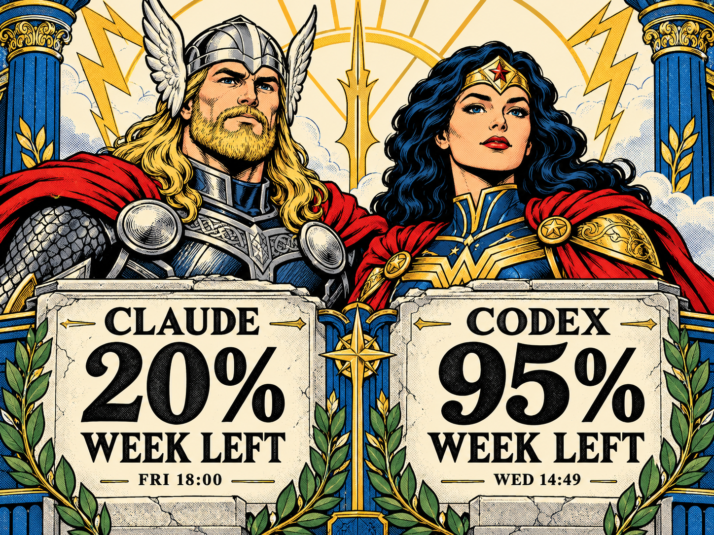
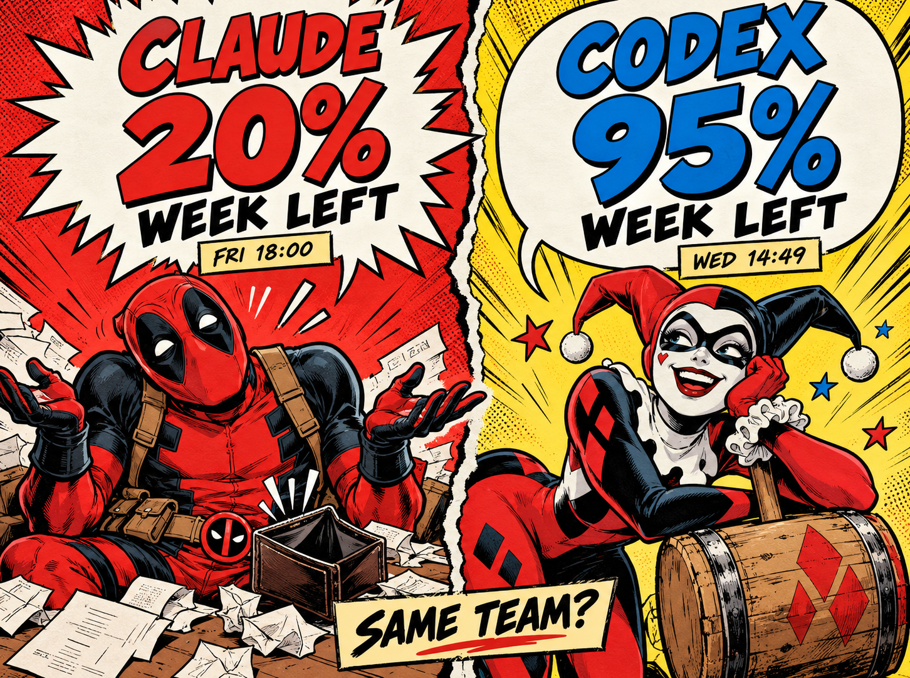

03 / Gods of Thunder
Thor × Wonder Woman · Stone inscriptions, heroic portraits and gold/cobalt framing.
Marvel versus DC. Two completed mockups from six planned directions.
Frozen examples: Claude 20% and Codex 95% weekly allowance remaining. RGB concept art; not current usage or physical e-ink proofs.

Thor × Wonder Woman · Stone inscriptions, heroic portraits and gold/cobalt framing.

Deadpool × Harley Quinn · Comic banter and oversized speech balloons carry the balances.
The image generator blocked Worlds Collide, Rooftop Rivals, Mystic Crossover and Cosmic Collision after revised attempts. Their briefs and generation outcomes are saved; no images were produced for them. Each preview scales to at most 600 CSS pixels wide.